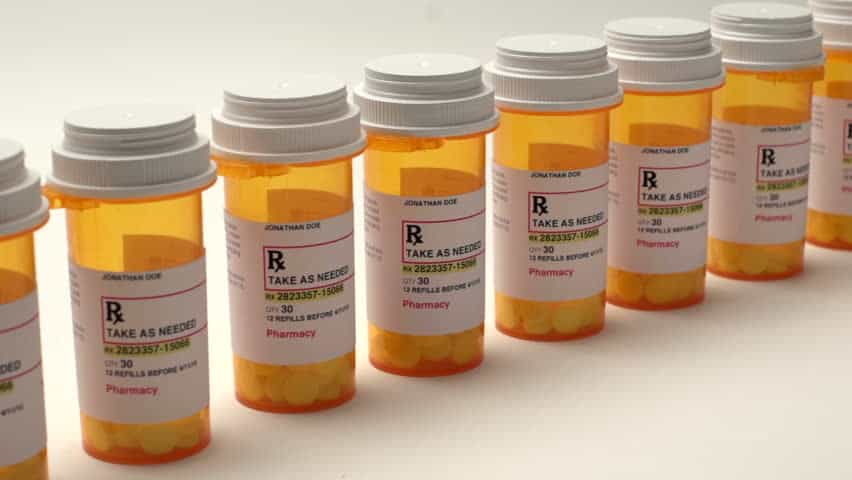
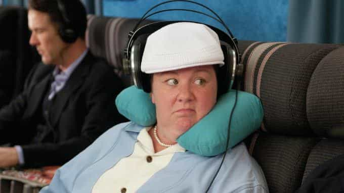

Albert is a Third Degree Master Mason and a Traveling Man who can usually be found somewhere in the great expanse that is currently known as the United States of America.


I have spent many a day and night on long haul flights to Europe and Asia, both personally and professionally. Although I don’t have an exact count, from reviewing my frequent flyer credits it has probably been a few dozen in the last five years. So I have a decent amount of experience that I would like impart with my fellow man on tactics I use to confront this type of travel.
First class is obviously the best. Business class is really just about the same as first class if you end up on a three-cabin plane. Paying or obtaining this premium service, unless you are wealthy, can get tricky.
If you are flying for employment and that travel is going to involve eight or more hours in the air, the company should be paying for at least business class, especially if you are expected to start working with no rest period. Most company travel policies provide for this, but stingy managers might ignore that to save a few bucks on the travel budget.
If you are on a federal contract, it is sometimes required, or at least optional, by policy. Also, if your boss still will not comply with company policy and you are entitled to premium seating at the the company’s expense, don’t feel bad about “going over his head”. You shouldn’t have to sacrifice your well-being just so a pencil-neck boss can save a few dollars in travel expenses. (And don’t think for a minute when it comes his turn to take a 12-hour flight to Asia, he is going to ignore company policy and take a seat in economy instead of booking business class).
If you are flying personally, purchase the premium seat if you have the money. There are many websites available that have “discount” bookings on these seats, and when the cost is compared to economy, it sometimes is not much more. Unless you have some sort of high-end status with a frequent flyer program, don’t expect a “free” upgrade at the gate. Even using frequent flyer miles to purchase upgrades has been getting difficult in the last few years. A decade ago these upgrades were easier to obtain. Now, it is almost impossible.
Sometimes when checking-in at the airport, a deal on an upgrade may be offered. Consider it. Otherwise just get a window seat if stuck in economy (even if it is a few dollars more) so you can sleep without having some fat dude constantly waking you up to go to the bathroom.
If you want to take a chance on a rare free upgrade, dress well. Look like a businessman. Carry at least a blazer and be extremely nice to the gate staff. They are the ones who run the “departure management list” or “standby list” and control access to any empty premium seats. Gate staff goes through training on managing upgrades and are taught to make premium service look premium. A guy with a nice blazer and polo is going to get an upgrade well before a man wearing cargo pants and his vintage Metallica t-shirt.
Pick a foreign flag (non-US) company. Generally, they provide better international service. Foreign carriers will give out a decent free meal and drinks whereas American Airlines serves you something worse then a frozen meal and charges for any alcoholic drink.
If you can book it, even if that means a longer drive or overnight stay in a hotel, definitely book a direct flight if at all possible. Making connections, especially outside of the US, can be like trying to get the last flight out of Saigon before it falls. I’ve had complications on just about every trip because I thought it would be just fine to make a connection, even in Western Europe, but it has never paid off.
Always check for visa requirements, especially if you carry a non-US passport. Check for visa requirements for interim stops too. And remember if you are traveling for work (even if it is for a short conference), visa requirements can be vastly different then that if you are just traveling for tourist purposes.
Some countries require a visa to make a connection. I have seen many of my non-US co-workers get confined for failing to have the proper visa to get on a plane that is going to their final destination even though they had boarding passes, hotel reservation, itineraries, and other such documentation.
One time I was with a colleague holding a passport from India. He did not get the proper transit visa and while attempting to make the connection was held up for three days while the company and embassy sorted out the paperwork.
Remember that outside of the US and parts of Europe, countries still care about immigration and will enforce it strictly.
Back in my 20’s, I used to get blitzed before a flight. We would start drinking in the office before hitting the car service. That is a bad idea though once a few years beyond college age. A beer, glass of wine, or mixed drink isn’t going to have much of an adverse effect. But anything beyond that is going to dehydrate you and those small airline cups of water will not be enough to get you hydrated by arrival time.
I still will have one or two servings of alcohol on a plane but also make sure I have a large bottle of water, which I will consume, about an hour before landing. Pro Tip: Buy electrolyte packs that can be easily mixed with water to enhance rehydration.
Dehydration and a hangover is not going to enhance your traveling experience. If you do drink on or before a flight, keep it reasonable.

DISCLAIMER: This is NOT medical advice. Consult your doctor before taking anything especially when flying.
I know many men who have various “dosing strategies” for long haul flights. Especially if you are sitting in economy, the experience is torture and most would prefer to sleep through it. If you select that as your choice and strategy, here are the rules I have come up with taking drugs during long haul experiences:
The effects will not wear off by landing time, leaving you partially impaired.
This works for most, but it tends to produce a “hang over” effect. If acetaminophen is not necessary, just take 25-50mg of Benadryl (or a generic) as that is the drug which induces drowsiness.
To talk your doctor into prescribing one say that you get flight anxiety and most doctors will give you at least the minimum pill amount and dose. Xanax is a good first line solution. It kicks in quick and but wears off in a few hours.
If you have a longer flight, Ativan is an excellent second line option. It has a longer half-life but also takes longer to kick in. And if you really suffer from flight anxiety ask for klonopin as its half-life is about 12 hours and it wears off pretty evenly. At least in the US, these are not handed out like candy though so don’t expect to show up to any walk-in clinic and get a script. Only a doctor which you have had a previous relationship with will most likely prescribe this class of drug to a patient.
These work well for most. Ambien will knock you out for about 4 hours and ambien CR is about 6-7 hours. Take the lowest dose and give it a “test drive” at least a few nights before your flight. Side effects tend to be rare but they do happen.
I remember talking to a guy who dosed on Ambien during a flight. A few days later he was reviewing video on his phone and found one of him eating a steak and drinking with a fellow passenger but had absolutely no memory of the experience.
Meclizine is effective especially for those who get motion sickness and will induce drowsiness in most. The maximum dose for this should be 50 mg. Pop it when you hit the security line because the action has about an hour of start up time.
Hydroxyzine (antihistamine but used for routinely for anxiety and sedation) is also available by prescription in the US (OTC in other countries), works for about 3-4 hours, can be repeated if desired, tends to produce less of a “hang over,” and is easier to talk a doctor into giving you then say a benzodiazepine as it is not a scheduled substance heavily regulated by the FDA.
Some governments strictly regulate these types of drugs. Make sure it has your name on the bottle too and not that of your friend or even wife. Don’t “borrow” a drug unless you plan taking it before departure leaving no evidence of consumption or possession. The last thing you want to do upon arrival is end up in confinement because you brought in regulated substances without a proper script into a country with a tight regulatory system.
The last thing you want to deal with is get a last minute delay or cancellation and then have to try to navigate the airport half whacked-out trying to get to a hotel, rebook a flight, or get back home. Get a drink at the bar just before boarding. Once you start rolling, pop the pill. Both will kick in about the same time and you should be feeling the effects by the time cruising altitude is reached.
My Preference: Ambien does not sit well with me so I usually go for a benzodiazepine. Ativan at 1 mg usually will put me out for 4-5 hours if I have a cocktail to accompany it. I also don’t have a problem keeping a small supply around for when I travel.
Here in the US, most doctors won’t question a request for such a low dose for your “flight anxiety.” Just don’t expect to get more then a handful dispensed at a time, as they are a regulated scheduled substance. My doctor will give me ten 1 mg tablets upon reasonable request and that matches the anecdotal experience of my colleagues. As a backup, I will go for fifty (50) mg of diphenhydramine.

These might work for some men but have never for me. I find them annoying and would prefer not to use them. They also bulk out my carry-on bag. If you would like to try them anyway, there are many combos available from major retailers for as little at $20. If you do need hearing protection to fall asleep, I recommend the small plastic disposable kind which can be purchased at just about any drug store or most airport convenience stores.
My advice is to just flip it off. It is just a distraction that is going to keep you from sleeping or relaxing. I usually have to work at least part of the day I land after a long flight so I want to take the time on the plane to rest. Or if I am traveling personally, I would rather wake up more refreshed and relaxed to enjoy my first day rather then spend time watching some two star movie on my device.
Listening to music also does little for me. The hum of the engines is usually enough white noise to allow me to “zone out.” Most long hauls are devoid of noisy children so the cancellation effect of music is not required. But if you need noise canceling headphones to fall asleep, get the smallest ones you can find. On the rare occasion I listen to music on a plane, I find simple ear buds to be sufficient.
Don’t get tanked before or on your flight. Keep it to one or two units of alcohol. Arriving dehydrated and hung over is going to make your first day or two of travels even worse.
Buy a large bottle of water after passing security. Juice it up with an electrolyte packet and consume entirely about an hour before landing.
Turn the tech off. It might serve as a useful distraction for a few hours during your flight, but is not going to improve your overall travel experience.
Most importantly, enjoy the friendly skies.
Read More: How To Approach Girls On Airplanes